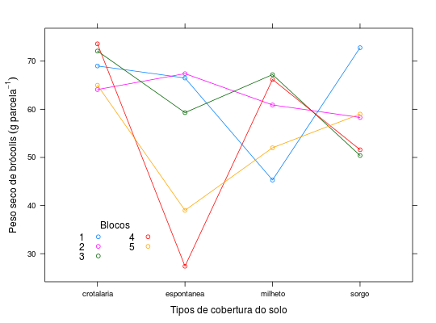

Experimento instalado em delineamento de blocos casualizados para estudar o efeito de tipos de cobertura morta no peso seco de brócolis.
Um data.frame com 20 observações e 3 variáveis, em que
cobertblocopesoCosta (2013), Tabela 6 pág. 63.
library(lattice) data(CostaTb6)#> Warning: data set ‘CostaTb6’ not foundstr(CostaTb6)#> 'data.frame': 20 obs. of 3 variables: #> $ cobert: Factor w/ 4 levels "crotalaria","espontanea",..: 4 1 3 2 4 1 3 2 4 1 ... #> $ bloco : int 1 1 1 1 2 2 2 2 3 3 ... #> $ peso : num 72.8 69 45.3 66.5 58.3 64.1 60.9 67.4 50.4 72.1 ...with(CostaTb6, addmargins(tapply(X = peso, INDEX = list(bloco, cobert), FUN = sum)))#> crotalaria espontanea milheto sorgo Sum #> 1 69.0 66.5 45.3 72.8 253.6 #> 2 64.1 67.4 60.9 58.3 250.7 #> 3 72.1 59.3 67.2 50.4 249.0 #> 4 73.6 27.4 66.2 51.6 218.8 #> 5 65.0 39.0 52.0 59.0 215.0 #> Sum 343.8 259.6 291.6 292.1 1187.1# Ordenar para evitar o efeito espaguete no gráfico. CostaTb6 <- CostaTb6[with(CostaTb6, order(cobert, bloco)), ] xyplot(peso ~ cobert, data = CostaTb6, groups = bloco, type = "b", xlab = "Tipos de cobertura do solo", ylab = expression("Peso seco de brócolis"~(g~parcela^{-1})), auto.key = list(corner = c(0.1, 0.1), columns = 2, title = "Blocos", cex.title = 1))